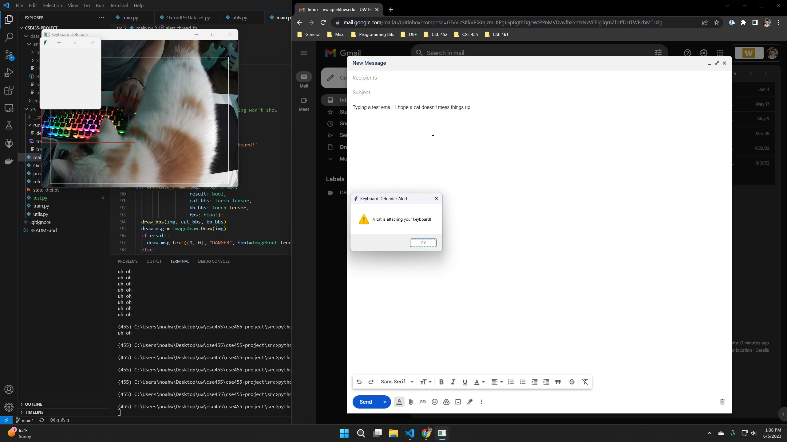
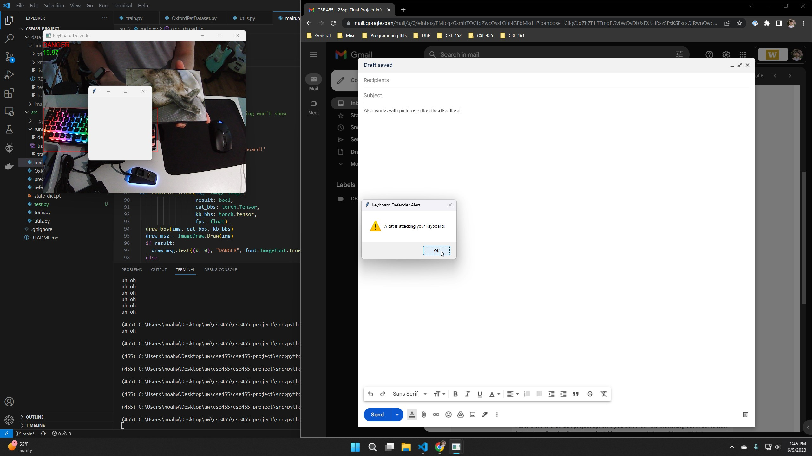

Objective
Consider the following: a dutiful remote employee leaves their desk unattended and their cat jumps on the keyboard. The cat now has the power to write and send emails to anyone, including important business contacts. History has shown that cats will exploit this power for personal gain, but with the Cat Keyboard Defender security software, humanity will finally be protected.
Product Overview
Cat Keyboard Defender analyzes a webcam video stream to detect when cats are near keyboards. When danger is detected, it creates an alert popup window that persists until the cat moves from the keyboard. This requires a webcam pointed at the targeted keyboard.
The product uses a convolutional neural network (Faster R-CNN) to detect the bounding boxes of keyboards and cats, and then analyzes the boxes to determine the threat level. Below is an example of the product in operation.
Algorithm
Cat Keyboard Defender runs each frame through a pretrained Faster R-CNN model to predict bounding boxes and object labels and discards any that aren't keyboards or cats.
It then combines the cat boxes and keyboard boxes into one super-box each, and their overlap area is computed. The model decides whether the kayboard is in danger by comparing the overlap area to the area of the keyboard box.
If a threat is detected, the program creates an alert popup that becomes the focused window, diverting keyboard input from other applications. This alert can be ignored by changes windows manually, but if it is closed, it will reappear until the cat has left.
Local Environment
I ran code and trained the model on my local machine using Windows and an Nvidia GeForce RTX 3080 graphics card. To test Cat Keyboard Detector, I used my own webcam, keyboard, and cat. I also used a picture of another cat to simulate the presence of one (see Figure 2), since picking up my cat was not always feasible.
Preexisting Components
Model
The main component is the Faster R-CNN model used for inference. The PyTorch model uses a MobileNet backbone for improved speed (since this is a real-time task) and uses pretrained COCO weights so it can identify cats and keyboards. This specific model was chosen because it was the fastest object detection model that comes shipped with PyTorch. Initially, I used Ultralytics' YOLOv5s model but ran into too many runtime issues.
Code
The libraries I used were mainly PyTorch, NumPy, and OpenCV.
reference.py includes modified versions of helper functions from PyTorch's vision repository to help with training. To evalutate the model, I calculated 50% mAP using TorchMetrics.
Implemented Components and Data
I implemented the main program loop and the logic that handles the model predictions.
With the help of reference.py and the Colab demos from class, I implemented the rest of the training code using the Oxford IIIT Pet Dataset (a segmentation dataset with different types of cats and dogs). This involved creating a custom Dataset class and creating train and evaluation methods.
The Training Failure
While I did implement training with the pet dataset, the trained model performed worse in operation. During real-world testing, the custom model was inconsistent in detecting cats and failed to detect any keyboards, while the default pretrained model could do both fairly accurately.
This is likely due to the quality of the dataset: most of the images are head-on pictures, and only contain cats and dogs. I chose this dataset because I wanted to improve the model's accuracy in detecting pets so it could catch more cases of keyboard attacks, but the data seems better suited for classification tasks in retrospect. Even if the pet performance improved, it may have detracted from keyboard recognition performance.
Training Results
I trained the pretrained model on an 80-20 split of the data with the following parameters: epochs=20, learning_rate=0.01, momentum=0.9, decay=0.0005. Figure 3 shows the loss per epoch.
From Figure 3, we see that the loss trends downwards slowly. The loss at epoch 20 does not differ greatly from epoch 1, which is to be expected because the model is already extensively trained on COCO.
After training was complete, I compared the mAP of the default and custom-trained models on 20% of the data. Before training, the mAP was 0.8801. After training, the mAP was 0.9623. The values are very high, which may be caused by the simplicity of the data, but regardless there is an improvement after training. However, as previously mentioned, this did not translate to the real-world use case.
Conclusions
Performance
In my local environment, the model consistently achieved around 20 FPS. It was effective in identifying threats with good lighting conditions, but struggled in darker scenes. The bounding boxes were jittery and occasionally disappeared for a few frames at a time, but this noise was mitigated by a moving average filter of the predictions.
Improvements
The noise in the predictions suggest that more training could be done. This would likely require a new dataset of desk environments with and without pets, which simulates the use case.
The bounding box algorithm yields very coarse predictions. Pixel masks could result in higher accuracy, especially in cases where the cat overlaps the keyboard to the point where the bounding box is incorrect. Additionally, depth information could help distinguish when a cat is actually on the same plane as the keyboard. This is important if the video shows lots of background scenery and not just the desk.